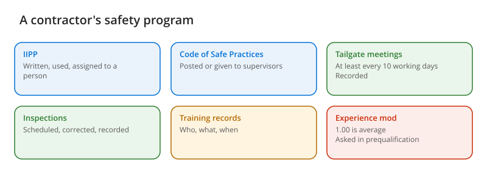

Safety program as a business system
In one sentence: a safety program is required by law, protects your people and directly affects your insurance cost and whether you can bid, so run it like any other business system: written, trained, checked and recorded.

What Cal/OSHA requires of construction employers
- A written, effective Injury and Illness Prevention Program (IIPP) under Title 8, section 3203, as required for construction by section 1509.
- A written Code of Safe Practices for your operations, posted at the job site office or given to each supervisor.
- Tailgate or toolbox safety meetings led by supervisors at least every 10 working days.
- Heat illness prevention for outdoor work, and the specific programs your work needs (trenching, fall protection, electrical safety, traffic control).
Running it
- Assign responsibility: a named person in the office and each foreman in the field.
- Inspect: job site inspections on a schedule, corrected and recorded.
- Train: new hires before work starts; refresher and task training; record who, what and when.
- Investigate: every injury and near miss, to find the cause, not someone to blame.
- Record: training, meetings, inspections and injury logs, kept where you can find them.
Your experience modification rate
California's workers' compensation experience modification compares your actual losses with the losses expected for contractors of your type and size. 1.00 (100%) is average; above it usually raises your premium, below it usually lowers it. Many owners and general contractors ask for your mod in prequalification. See Prequalification and getting on bid lists.
Getting help
Cal/OSHA Consultation Services offers free, confidential help separate from enforcement. Your workers' comp insurer usually has loss control staff too.
PM notes
The best safety metric isn't the injury count; it's whether foremen hold the meetings, inspect and stop unsafe work. Measure those.
Official sources
Title 8, section 1509 · Cal/OSHA guide to developing your IIPP · WCIRB: experience modification.
Common mistakes
- An IIPP downloaded, signed and never used.
- Tailgate meetings held but not recorded.
- Ignoring the experience mod until a GC rejects your prequalification.